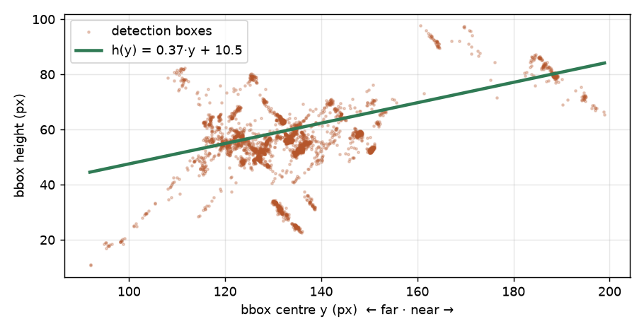

Lesson 07 / 14
ID 일관성: 오프라인 Tracklet 정합
ReID 모델이 있으면(models/hanwoo_reid.pt) 이 레슨의 1차 정합만 쓰고, 장시간 재등장은 다음 레슨의 고정 개체군 ID 배정이 맡습니다. ReID 모델이 없을 때는 여기의 2단계 정합이 그대로 동작합니다.
온라인 추적기는 “지금까지” 의 정보만으로 결정해야 합니다. 하지만 녹화 영상 분석에서는 영상 전체를 다 본 뒤 다시 판단할 수 있습니다. 축사는 닫힌 공간 + 고정 카메라 + 같은 개체군이라는 강한 조건이 있으므로, 끊어진 조각(tracklet)들을 다시 이어붙이는 것이 ID 일관성을 높이는 가장 효과적인 방법입니다.

1. 알고리즘
- 노이즈 제거: 0.5초(12프레임) 미만 tracklet 은 오검출로 보고 제거
- 원근 모델: 같은 소라도 화면 위쪽(먼 곳)은 작게 보인다. 모든 검출에서 bbox 높이 h 와 중심 y 의 관계
h(y) = a·y + b를 적합 → 거리를 “몸 크기 단위” 로 정규화 - 연결 후보: tracklet i 가 끝난 뒤 j 가 시작하고(시간 겹침 없음), 공백 ≤ 20초, 끝-시작 위치 거리 ≤
2.5 + 0.6×공백(초)몸길이 - 비용
= 0.5 × (거리 / 허용거리) + 0.5 × 외형거리(Bhattacharyya) + 0.15 × (공백/최대공백) - Hungarian 으로 ‘끝’ ↔ ‘시작’ 1:1 최적 연결, 비용 < 0.85 인 쌍만 병합. 연결이 없을 때까지 반복(체인 i→j→k 처리)
- 2단계 정합: 위 과정을 조건을 바꿔 두 번 수행
1차 (짧은 끊김) 2차 (장시간 재등장) 최대 공백 20초 5분 허용 거리 2.5 + 0.6×공백 몸길이 (시간에 비례) 3 몸길이 고정 (사라진 자리 근처에서 재등장) 외형 가중치 / 임계 비용 0.5 / 0.85 0.6 / 0.55 (더 엄격) 대상 기둥·펜스 뒤 통과, 소끼리 잠깐 겹침 누워 있어 검출이 끊긴 소, 사료조 앞 군집 - ID 재부여 (등장 순 1, 2, 3 …) + 0.5초 이하의 순간적인 검출 누락만 선형 보간 (결과 영상에 얇은 박스로 표시)
보간은 짧게! 처음에는 20초까지 보간했더니, 소가 누워 검출이 끊긴 동안 소가 없는 자리에 가상 박스와 이동 경로가 그려지고, 그 가짜 이동이 전체 이동거리의 23~32%를 차지했습니다. 지금은 0.5초 이하만 메우고, 더 긴 공백은 “보이지 않음”으로 둡니다. 활동량도 실제 검출 프레임으로만 계산합니다(레슨 09).
왜 bbox 높이로 원근을 잡나?
소의 실제 크기는 거의 같으므로, 화면에서의 크기 변화는 대부분 카메라와의 거리 때문입니다. 가림으로 잘린 박스가 많아 단순 평균은 작게 치우치므로, y 구간별 75% 분위 높이(대체로 가려지지 않은 소)를 써서 robust 하게 적합합니다.

외형 특징: H-S 색 히스토그램
bbox 중앙 60% 영역(펜스·배경 최소화)의 HSV 중 색상(H)·채도(S) 2D 히스토그램. 밝기(V)를 빼서 그늘·조명 변화에 둔감하게 하고, tracklet 전체 평균을 씁니다. 한우는 색이 비슷하지만 털색 농도·흰 반점 차이가 반영되며, 거리 조건과 결합하면 충분한 판별력이 생깁니다.
2. 코드
📄 hanwoo/stitching.py
"""2단계: 오프라인 ID 정합 (Tracklet stitching).
온라인 추적기(BoT-SORT)는 펜스·기둥 가림, 소끼리 겹침 때문에 같은 소에게
여러 개의 ID 를 부여하기 쉽다. 축사는 '닫힌 공간 + 고정 카메라' 이므로
영상 전체를 본 뒤(offline) 끊어진 tracklet 들을 다시 이어붙이면 ID 일관성이 크게 좋아진다.
1) 짧은 tracklet(노이즈) 제거
2) 원근 모델 h(y) = a*y + b (화면 위쪽일수록 소가 작게 보임)
3) tracklet i 의 '끝' ↔ tracklet j 의 '시작' 비용 행렬
cost = (1-w)·거리비용(원근 정규화, 시간에 비례해 허용반경 증가) + w·외형거리(Bhattacharyya)
4) Hungarian 알고리즘으로 1:1 최적 연결 → 비용이 임계값 이하인 것만 병합 (수렴할 때까지 반복)
5) ID 재부여(1..N) + 짧은 공백 선형 보간
"""
from __future__ import annotations
import cv2
import numpy as np
import pandas as pd
from scipy.optimize import linear_sum_assignment
from .config import PipelineConfig
# --------------------------------------------------------------------------- 원근 모델
def fit_perspective(df: pd.DataFrame):
"""bbox 높이 vs 화면 y 좌표의 선형 관계를 robust 하게 적합.
가림 때문에 bbox 가 잘린 경우가 많으므로 y 구간별 상위 75% 분위 높이를 사용한다.
반환: (a, b) → h(y) = a*y + b [px]
"""
cy = ((df.y1 + df.y2) / 2).to_numpy()
h = (df.y2 - df.y1).to_numpy()
if len(cy) < 20:
return 0.0, float(np.median(h)) if len(h) else 100.0
bins = np.quantile(cy, np.linspace(0, 1, 11))
xs, ys = [], []
for lo, hi in zip(bins[:-1], bins[1:]):
m = (cy >= lo) & (cy <= hi)
if m.sum() >= 5:
xs.append(np.median(cy[m]))
ys.append(np.quantile(h[m], 0.75))
a, b = np.polyfit(xs, ys, 1)
if a <= 0: # 비정상 → 상수 모델
a, b = 0.0, float(np.median(ys))
return float(a), float(b)
def body_px(y, persp):
a, b = persp
return np.maximum(a * np.asarray(y) + b, 20.0)
# --------------------------------------------------------------------------- tracklet 요약
def _summaries(df: pd.DataFrame, feats: dict):
out = {}
for tid, g in df.groupby("tid"):
g = g.sort_values("frame")
cx = ((g.x1 + g.x2) / 2).to_numpy()
cy = ((g.y1 + g.y2) / 2).to_numpy()
k = min(5, len(g))
hists = [feats[(f, tid)] for f in g.frame.to_numpy() if (f, tid) in feats]
app = np.mean(hists, axis=0).astype(np.float32) if hists else None
out[tid] = dict(
start=int(g.frame.iloc[0]), end=int(g.frame.iloc[-1]),
p_start=np.array([np.median(cx[:k]), np.median(cy[:k])]),
p_end=np.array([np.median(cx[-k:]), np.median(cy[-k:])]),
app=app, n=len(g),
)
return out
def _app_dist(a, b):
if a is None or b is None:
return 0.5
return float(cv2.compareHist(a, b, cv2.HISTCMP_BHATTACHARYYA))
def stitch_stages(cfg: PipelineConfig):
"""(이름, 최대공백s, 기본반경BL, 속도BL/s, 외형가중치, 최대비용) — 1차: 짧은 끊김, 2차: 장시간 재등장"""
return [
("short", cfg.stitch_max_gap_s, cfg.stitch_max_dist_bl, cfg.stitch_speed_bl_s,
cfg.stitch_app_weight, cfg.stitch_max_cost),
("long", cfg.stitch2_max_gap_s, cfg.stitch2_max_dist_bl, cfg.stitch2_speed_bl_s,
cfg.stitch2_app_weight, cfg.stitch2_max_cost),
]
def stitch_tracklets(df: pd.DataFrame, feats: dict, fps: float, cfg: PipelineConfig, persp, stages=("short", "long")):
"""2단계(짧은 끊김 → 장시간 재등장) tracklet 병합. 반환: (df, feats, 병합 로그)
ReID 기반 고정 개체군 배정(identity.py)을 쓸 때는 1차("short")만 수행하고 장시간 재등장은 배정 단계가 담당한다.
"""
log = []
for stage in stitch_stages(cfg):
if stage[0] not in stages:
continue
df, feats, lg = _stitch_stage(df, feats, fps, persp, *stage)
log += lg
return df, feats, log
def _stitch_stage(df, feats, fps, persp, stage, max_gap_s, dist_bl, speed_bl_s, app_w, max_cost):
df = df.copy()
max_gap = int(max_gap_s * fps)
log = []
for _it in range(10): # 연결이 더 이상 없을 때까지 반복
S = _summaries(df, feats)
tids = sorted(S)
n = len(tids)
if n < 2:
break
C = np.full((n, n), 1e3)
for i, ti in enumerate(tids):
si = S[ti]
for j, tj in enumerate(tids):
if i == j:
continue
sj = S[tj]
gap = sj["start"] - si["end"]
if gap <= 0 or gap > max_gap:
continue
ymid = (si["p_end"][1] + sj["p_start"][1]) / 2
d_bl = np.linalg.norm(si["p_end"] - sj["p_start"]) / body_px(ymid, persp)
allowed = dist_bl + speed_bl_s * gap / fps
if d_bl > allowed:
continue
c_dist = d_bl / allowed
c_app = _app_dist(si["app"], sj["app"])
c_gap = 0.15 * gap / max_gap
C[i, j] = (1 - app_w) * c_dist + app_w * c_app + c_gap
rows, cols = linear_sum_assignment(C)
links = [(tids[r], tids[c], C[r, c]) for r, c in zip(rows, cols) if C[r, c] < max_cost]
if not links:
break
# 체인(i→j→k)을 한 번에 처리하기 위해 union-find 형태로 루트 ID 로 치환
parent = {}
for a, b, c in links:
parent[b] = a
log.append(dict(stage=stage, src=int(b), dst=int(a), cost=round(float(c), 3)))
def root(t):
while t in parent:
t = parent[t]
return t
new_tid = df.tid.map(lambda t: root(t))
# feats 키도 갱신
feats = {(f, root(t)): v for (f, t), v in feats.items()}
df["tid"] = new_tid
# 동일 프레임 중복(이론상 없음) 방지
df = df.sort_values("conf", ascending=False).drop_duplicates(["frame", "tid"]).sort_values(["frame", "tid"])
return df.reset_index(drop=True), feats, log
def relabel_and_interpolate(df: pd.DataFrame, fps: float, cfg: PipelineConfig):
"""ID 를 등장 순서대로 1..N 으로 재부여하고, 짧은 공백은 선형 보간."""
first = df.groupby("tid").agg(f0=("frame", "min"), x=("x1", "first")).sort_values(["f0", "x"])
mapping = {old: i + 1 for i, old in enumerate(first.index)}
df = df.copy()
df["tid"] = df.tid.map(mapping)
df["interp"] = 0
max_gap = int(cfg.interp_max_gap_s * fps)
parts = []
for tid, g in df.groupby("tid"):
g = g.set_index("frame").sort_index()
full = np.arange(g.index.min(), g.index.max() + 1)
missing = np.setdiff1d(full, g.index)
if len(missing):
gg = g.reindex(full)
# 공백 길이 계산 → max_gap 이하만 보간
isna = gg.x1.isna().to_numpy()
run_id = np.cumsum(~isna)
run_len = pd.Series(isna).groupby(run_id).transform("sum").to_numpy()
fill = isna & (run_len <= max_gap)
for c in ["x1", "y1", "x2", "y2"]:
gg[c] = gg[c].interpolate(limit_area="inside")
gg.loc[isna, "interp"] = 1
gg.loc[isna, "conf"] = 0.0
gg = gg[~isna | fill]
g = gg
g["tid"] = tid
parts.append(g.reset_index().rename(columns={"index": "frame"}))
out = pd.concat(parts, ignore_index=True).sort_values(["frame", "tid"]).reset_index(drop=True)
out["frame"] = out.frame.astype(int)
out["interp"] = out.interp.astype(int)
return out, mapping
def clean_short(df: pd.DataFrame, cfg: PipelineConfig):
cnt = df.groupby("tid").frame.transform("count")
return df[cnt >= cfg.min_track_frames].copy()3. 파라미터 (config.py)
📄 hanwoo/config.py (L26–38)
# ---- 오프라인 ID 정합 (Tracklet stitching) ----
stitch_max_gap_s: float = 20.0 # 끊긴 구간 최대 허용 시간
stitch_max_dist_bl: float = 2.5 # 끊긴 위치 사이 최대 거리 (몸길이 단위, 시간에 따라 증가)
stitch_speed_bl_s: float = 0.6 # 끊긴 동안 이동 가능한 속도 상한(몸길이/초)
stitch_app_weight: float = 0.5 # 외형 유사도 가중치
stitch_max_cost: float = 0.85
# 2차 정합: 장시간(최대 5분) 사라졌다 '같은 자리 근처'에서 다시 나타난 소 (누워 있음·기둥 뒤·군집)
stitch2_max_gap_s: float = 300.0
stitch2_max_dist_bl: float = 3.0 # 시간과 무관하게 고정 반경
stitch2_speed_bl_s: float = 0.0
stitch2_app_weight: float = 0.6 # 외형 비중을 높임
stitch2_max_cost: float = 0.55 # 더 엄격한 임계값
interp_max_gap_s: float = 0.5 # 보간(표시용) 최대 구간 — 순간적인 검출 누락만 메움. 더 긴 공백은빠른 재튜닝: 검출·추적 결과는
outputs/<영상>/cache_track.npz 에 저장됩니다. python run_activity.py E:/Video/cow --reuse 로 YOLO 를 다시 돌리지 않고 정합·활동량만 몇 초 만에 재계산할 수 있습니다.튜닝 팁: 결과에서 서로 다른 소가 하나로 합쳐지면
stitch_max_cost 를 낮추거나 stitch_app_weight 를 높이고, 한 소가 여전히 여러 ID 로 쪼개지면 stitch_max_gap_s, stitch_max_dist_bl 을 늘리세요.